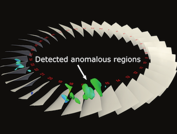

Identification of early signs of rotating stall is essential for the study of turbine engine stability. With recent advancements of high performance computing, high-resolution unsteady flow fields allow in depth exploration of rotating stall and its possible causes. Performing stall analysis, however, involves significant effort to process large amounts of simulation data, especially when investigating abnormalities across many time steps. In order to assist scientists during the exploration process, we present a visual analytics framework to identify suspected spatiotemporal regions through a comparative visualization so that scientists are able to focus on relevant data inmore detail. To achieve this, we use a statistical anomaly detection method to locate possible stall inception. We further derive algorithms from domain knowledge and convey the analysis results through juxtaposed interactive plots. Using our integrated visualization system, scientists can visually investigate the detected regions for potential stall initiation and further explore these regions to enhance the understanding of this phenomenon. Positive feedback from scientists demonstrate the efficacy of our system in analyzing rotating stall.
Link to this postThe EDDA library aims at visualizing distribution data for uncertainty analysis.
The goal is to provide a unified data model with generic distribution representations for the development of uncertainty visualization algorithms. The distribution models to support will be parametric distributions like Gaussian and GMM, un-parametric distributions like histogram and KDE, as well as joint distributions. These are encapsulated into C++ template classes. Coupled with our experiences on developing regular and curvilinear-grid datasets in OSUFlow, we provide an API allowing to query for the distribution of a given 3D position. The return of the query can be either the interpolated distribution or a Monte-Carlo sample of the distribution, depending on the need of the visualization algorithm. We also provide distribution arithmetic and analysis tools including project ITL.
Link to this post

When the spatial and temporal resolutions of a time-varying simulation become very high, it is not possible to process or store data from every time step due to the high computation and storage cost. Although using uniformly down-sampled data for visualization is a common practice, important information in the un-stored data can be lost. Currently, linear interpolation is a popular method used to approximate data between the stored time steps. For pathline computation, however, errors from the interpolated velocity in the time dimension can accumulate quickly and make the trajectories rather unreliable. To inform the scientist the error involved in the visualization, it is important to quantify and display the uncertainty, and more importantly, to reduce the error whenever possible. In this paper, we present an algorithm to model temporal interpolation error, and an error reduction scheme to improve the data accuracy for temporally down-sampled data. We show that it is possible to compute polynomial regression and measure the interpolation errors incrementally with one sequential scan of the time-varying flow field. We also show empirically that when the data sequence is fitted with least-squares regression, the errors can be approximated with a Gaussian distribution. With the end positions of particle traces stored, we show that our error modeling scheme can better estimate the intermediate particle trajectories between the stored time steps based on a maximum likelihood method that utilizes forward and backward particle traces.
Link to this post
The heterogeneity and complexity of multivariate characteristics poses a unique challenge to visual exploration of multivariate scientific data sets, as it requires investigating the usually hidden associations between different variables and specific scalar values to understand the data’s multi-faceted properties. We present a novel association analysis method that guides visual exploration of scalar-level associations in the multivariate context. We model the directional interactions between scalars of different variables as information flows based on association rules. We introduce the concepts of informativeness and uniqueness to describe how information flows between scalars of different variables and how they are associated with each other in the multivariate domain. Based on scalar-level associations represented by a probabilistic association graph, we propose the Multi-Scalar Informativeness-Uniqueness (MSIU) algorithm to evaluate the informativeness and uniqueness of scalars. We present an exploration framework with multiple interactive views to explore the scalars of interest with confident associations in the multivariate spatial domain, and provide guidelines for visual exploration using our framework. We demonstrate the effectiveness and usefulness of our approach through case studies using three representative multivariate scientific data sets.
Xiaotong Liu and Han-Wei Shen. IEEE Transactions on Visualization and Computer Graphics (TVCG), 2015.
Link to this post
We conducted a study of density estimation, the conversion of discrete particle positions to a continuous field of particle density defined over a 3D Cartesian grid. The study features a methodology for evaluating the accuracy and performance of various density estimation methods, results of that evaluation for four density estimators, and a large-scale parallel algorithm for a self-adaptive method that computes a Voronoi tessellation as an intermediate step. We demonstrated the performance and scalability of our parallel algorithm on a supercomputer when estimating the density of 100 million particles over 500 billion grid points.
Submitted to SIAM Journal on Scientific Computing SISC Special Section on CSE15: Software and Big Data, 2015.
Link to this postOn Tuesday, January 13-15, there will be a Principal Investigator (PI) Meeting, for projects funded under the Scientific Data Management, Analysis and Visualization (SDMAV) by DOE SC ASCR, in Walnut Creek, CA. EDDA PIs and investigators will be present for this meeting. Below are links to download materials to be presented at this meeting for the EDDA project.
Link to this postThe acronym for our project is EDDA, which if you google for it you find the description for Edda on wikipedia.
The term "Edda" (/ˈɛdə/; Old Norse Edda, plural Eddur) applies to the Old Norse Poetic Edda and Prose Edda, both of which were written down in Iceland during the 13th century in Icelandic, although they contain material from earlier traditional sources, reaching into the Viking Age. The books are the main sources of medieval skaldic tradition in Iceland and Norse mythology.
Runic alphabets, in particular futhark ("th" is the thorn: þ, fuþark), was used by Scandanavian (Norse) and its use was noted use in Eddic lore.
In Norse mythology, the runic alphabet is attested to a divine origin (Old Norse: reginkunnr). This is attested as early as on the Noleby Runestone from approximately 600 AD that reads Runo fahi raginakundo toj[e'k]a..., meaning "I prepare the suitable divine rune..." and in an attestation from the 9th century on the Sparlösa Runestone, which reads Ok rað runaR þaR rægi[n]kundu, meaning "And interpret the runes of divine origin".
J.R.R. Tolkien used derivatives of futhark to describe the alphabet used by the dwarves and even created his own called Cirth.
Well, what does this all mean for our logo? It's the transliterated version of EDDA into elder futhark.
As it becomes more difficult to analyze large-scale simulation output at full resolution, users will have to review and identify regions of interest by transforming data into compact information descriptors that characterize simulation results and allow detailed analysis on demand. This is because exascale architectures will be much more constrained with respect to data movement, and in situ data processing will be the norm, where the goals are to fit the total amount of output data within a budget, to summarize and triage data based on content, and to classify and index data to facilitate efficient offline analysis. In addition, in situ analysis must be performed in a time and space efficient fashion, not only to avoid slowing down the simulation, but also to not consume too much memory.
Among many different feature descriptors, the statistical information derived from data samples is a promising approach to taming the big data avalanche, because data distributions computed from a population can compactly describe the presence and characteristics of salient features with minimal data movement. The ability to computationally summarize and process data using distributions provides an efficient and representative capture of the information content of a large-scale data set. This representation can adjust to size and resource constraints, with the added benefit that uncertainty can be quantified and communicated.
In this project, we posit that with the growing number of cores per node, with increasing memory and I/O constraints in emerging extreme-scale platforms, it will be feasible and desirable to compute distributions at simulation time, perform memory-efficient in situ analysis using distributions, and save distributions as a space-efficient summarization for on-demand, offline visualization and analysis of salient features. The key development will be a novel distribution-based analysis and visualization framework based on in situ pro- cessing of extreme-scale scientific data. Our goals are to ensure that scientists can easily obtain an overview of the entire data set regardless of the size of the simulation; understand the characteristics and locations of the features; easily interact with the data and select regions and features of interest; and perform all the analysis tasks with a small memory footprint.
Link to this post